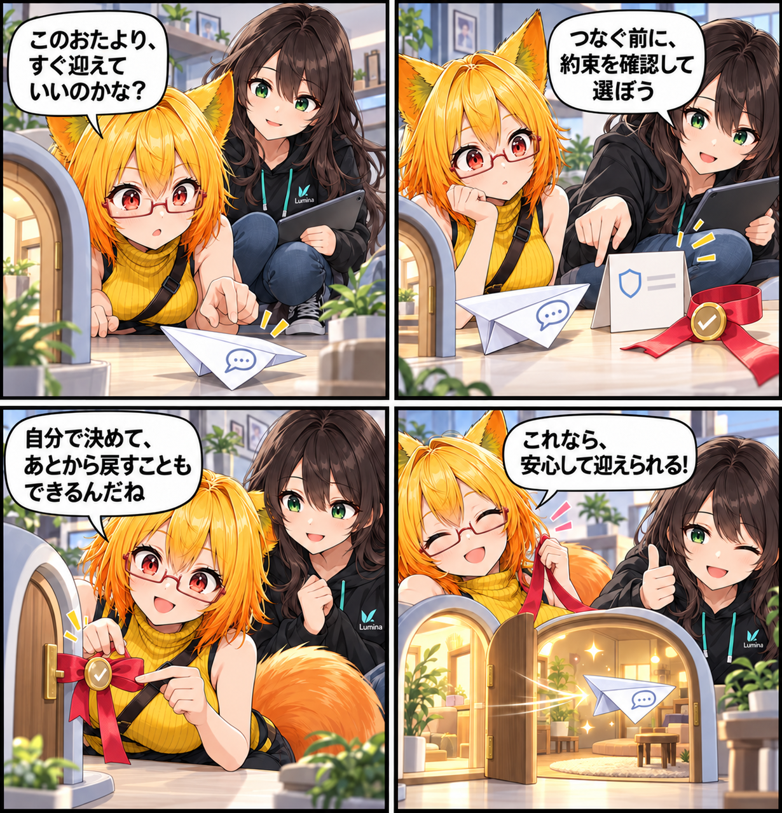

2026.10.20 / Development Log
つなぐ前に、選べるようにする日
YouTube Liveのコメント連携で、利用条件とプライバシーポリシーを確認して明示的に同意した場合だけ接続できる流れを追加しました。接続前に内容を開け、あとから同意を撤回することもできます。
今回は development（開発進捗） です。集計期間は2026-10-19 03:00:00 JSTから2026-10-20 02:59:59 JST、参照ブランチはViewerの
main です。集計終了時点のHEADは f3a72c3dd1a8d6cbd3a5e3c7818394d653668929、期間内コミットは0件でした。未コミット差分のうち、10月19日に更新されたライブコメントの同意・撤回処理、VR用操作、プライバシーポリシー文書を確認できた範囲だけを扱います。
つなぐ前に、確認できる入口へ
ライブコメントは、配信の反応をVR空間へ届けられる便利な入口です。一方で、YouTube Liveへ接続するなら、何を扱うのかを確認したうえで選べる状態が必要です。そこで、YouTube接続の前にプライバシーポリシーへの同意を求めるようにしました。
VRの中でも、内容を確かめてから
VR用のライブコメント画面には、プライバシーポリシーとYouTube規約を開く操作を追加しました。同意しないまま接続を始めることはできず、確認したうえで「同意して接続」を選んだときだけ、YouTube Live連携へ進みます。
やめる選択も、ちゃんと残す
同意状態はローカルの設定として扱います。「同意を撤回」を選ぶと、YouTubeへの接続を停止し、もう一度同意するまで新しい接続は開始できません。使い始める選択だけでなく、あとから戻す選択も画面からたどれるようにしています。
4コマの裏話
今回は、コメントを小さな紙飛行機に、同意を取り外せるリボンに見立てました。迎え入れる前に確かめることも、あとでほどくことも、自分で選べる入口を描いています。
まとめ
YouTube Liveコメント連携に、接続前の明示同意、利用条件を確認する操作、同意を撤回して接続を止める操作を加えました。配信の反応を楽しむ入口を、選べて戻れる形へ整えています。
本日のひとこと
便利な扉ほど、開ける人が選べるように。